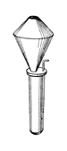

Bärpfeife is one of the oldest organ stops, having been introduced in the mid-1500's by Niehoff. It is a reed stop of the Regal class; Grove calls it �the predecessor of regal stops with fanciful resonators�. Williams calls the Bärpfeife �a successor to the old regal or reed Schreyerpfeife�, and is the only source to mention the latter name. Adlung cites Werckmeister as stating that around 1600 the Bärpfeife and Krummhorn were called Vox Humana. According to the literature it has been made at 32', 16', 8', and 4' pitch, but the only known examples are at 8'. It has been made with a variety of resonator shapes. The most common consisted of two truncated cones joined at the base, as shown Wedgwood's illustration above (click on it for a larger image). Often an additional truncated cone was added to the top, as shown in Audsley's drawing below. |  |
The tone of the Bärpfeife has been described as soft, growling, and smothered. Adlung and Wedgwood report that it was intended to imitate the growling of a bear, hence the name, but Grove says" �the term has nothing to do with growling bears, however coarse the tone�. While Audsley and Wedgwood list Baarpyp as a synonym for Bärpfeife, Grove considers it a synonym for Baarpijp. Indeed, the letter �ÿ� (y umlaut) is frequently used in the Dutch language as a replacement for the combination �ij�. Grove lists Schreyer as a synonym for Bärpfeife, but Adlung's description has more in common with the similarly named Schreier[pfeife].
No examples of Schreyer or Kryther are known; those synonyms are listed only by Grove. No examples are known of Bärpipe, Bährpfeife, Baarpfeife, or Behrpfeife (mentioned only by Adlung). Contributions welcome. The only known examples of Baarpyp are flues, not reeds; see Baarpijp.
Baarpfeiffe 8', Positiv; St. Jacobi, Hamburg, Germany; Scherer 1619.
Baar-pfeife 8', Brust; St. Nicolai, Hamburg, Germany; Schnitger 1682 (destroyed 1842).
Baar Pfeiffe 8', Ruckpositiv; Dom, Hamburg, Germany; Schnitger 1701.
Baarpfeife 8', Ruckpositiv; St. Nikolai, Flensburg, Germany?; Schnitger 1707.
Baar Pfeiffe 8', Ruckpositiv; St. Johannis, Lüneburg, Germany; Dropa 1712.
Bärpfeife 8', Kronenwerk; St. Marien, Lübeck, Germany; Kemper 1968.
Bärpfeife 8', Rückpositiv; Musikhalle, Hamburg, Germany; Beckerath 1951.
Barpfeife 8', Ruckpositiv; Trinity Evangelical Lutheran Church, Cleveland, Ohio; Beckerath 1957.
Barpfeife 8', Ruckpositive; Immaculate Conception, Montral, Quebec, Canada; Beckerath.
Would you like to hear what a Barpfeife sounds like?
For as little as $10 (US), you can sponsor a page in this Encyclopedia, and help purchase more sound samples!
|
Original website compiled by Edward L. Stauff. For educational use only. Barpfeife.html - Last updated 27 March 2003. |
Home Full Index |
{kind=link}